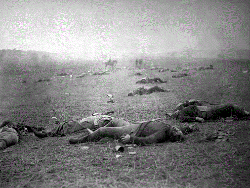

< < < Back
Two Black Women Start A White Guilt Atonement Fund That Becomes Extremely Profitable – Return Of Kings
A March 17 article in NYMag, “These Women Started a Company to Teach White People How to Be Less Racist,” reports on a new foundation called Safety Pin Box. The founders, Marissa Jenae Johnson and Leslie Mac, believe that the recent trend of wearing a safety pin to show you’re concerned about—well, whatever it’s supposed to mean—simply doesn’t go far enough. As the article puts it:
The monthly subscription service challenges its users to do more with their outrage than display it, and in exchange for $50-$100 a month (depending on the program) receive not a pin, not a pussy hat, but a lesson about racial bias and a task to tackle it.
So what do they do?

Apparently these two used to be 18th Century Portuguese slave ship captains, or did something bad like that.
The article continues:
Plus, their cash contributions fund black-women activists, in an attempt at reparations. Three months later, Safety Pin Box has 800 subscribers and has contributed nearly $21,000 to Black Women Being. Both Johnson and Mac have quit their jobs to focus on the project full time.
Then it explains that the two founders have quit their day jobs to become professional activists. They developed the concept while vacationing together in Jamaica and mulling over current events. They considered the safety pin thing to be an empty gesture (I agree). Then they noticed the trend being commercialized. About that, they stated:
[T]hese things are most likely just going to [benefit] privileged white people. And that’s what brought us to say, if people want to actually do something useful, they can pay us reparations. And we can literally tell them what to do even though we’ve already been telling them, and they haven’t been listening.
What will the penitents receive for their monthly payments? $25 gets you “an electronic form of solidarity, with one emailed task per month and exclusive calls to action.” $50 will allow you to correspond with another penitent and work together toward the monthly atonement activity. But wait! There’s more! “Our $100/month subscription is a premium box and you get three full tasks, access to our biweekly podcast, and quarterly webinars with high-profile black women.”
So December was Radical Compassion month (with a focus on senior citizens, so far so good), January was Not my President month (I’m guessing this isn’t a nonpartisan outfit), February was Black History Month (quite naturally), and March is “to raise funds for the new Marsha P. Johnson institute that will provide awareness of her prominence as a black transgender woman activist.”
Who receives the “reparations”?
As for the funding, it’s not specified what their operating costs are (apparently executive salaries and a website), but the remainder “goes to Black Women Being, that gives straight cash to black women activists. We do fund some other group projects and activist groups on the side, but our main giving every month is through Black Women Being.”
Will any of the guilt money be used to improve the lives of the impoverished in the Black community? Since the article states that it’s going to selected activists, apparently that means executive salaries and more propaganda. It’s not clear what the “group projects” involve, but I have a suggestion: how about entrepreneurship workshops, anti-drug education, or programs to encourage kids to stay in school?
Think that’s a pretty good hustle if you can get it? Well, the good news is that you too can apply to be a beneficiary. If you’re not female, that’s no barrier; transsexuals are notably included. As today’s sociopolitical rhetoric goes, the only criterion is saying you feel like a woman. If you’re not Black, no problem. Like gender, race is only a social construct, right? Just do what Rachel Dolezal did.
A modest proposal

Union soldiers killed in action at Gettysburg. What have today’s “community organizers” done compared to these guys?
I must say, these ladies have inspired me. White people are an underappreciated demographic, because of fifty years of leftist propaganda demonizing us. My own family history inspired me on how we can help fix this problem.
Most of my ancestors came to the USA in the 1880s. However, two were here before then. Both fought in the Civil War under Abraham Lincoln’s banner. One of them didn’t come back; he died of starvation in a POW camp called Andersonville, which made the Hanoi Hilton seem like an actual Hilton.
Did his death affect his family? Quite surely it did. Even the one who survived experienced the horrors of the worst war the USA has endured. Could my life have been affected (and all others on that branch of my extended family) because of that? Well, because of the lingering effects of what happened a century and a half ago… well, you’ve heard all that sort of rhetoric before, so surely you have no need of convincing.
Their efforts, and those of other Union Army soldiers, resulted in the emancipation of all the slaves in the Confederacy. Granted, only 2% of Southerners actually owned any slaves. Even so, the Union Army did a lot more for the Black community than does giving money to random activists. So how about a little payback in recognition of their sacrifice? I can set up a Patreon fund called “Sons of the Liberators”. Any Black person can show his or her gratitude for the Emancipation Proclamation—which came at the price of hundreds of thousands of lives—by donating to this fund.
A $25/month commitment will get the base level membership, including a “Thank You White America” bumper sticker and lapel button. For $50 a month, I’ll send a genuine coin with Abraham Lincoln’s portrait embossed on the front. But wait! There’s more! For $100 a month, I’ll send some YouTube videos for them explaining all the good things Whites did and counteracting false White guilt. I might also create a random annual drawing for a plane ticket to Haiti, for the lucky winner to get some intercultural perspectives on how life in America compares.
As for the rest of the funds, I won’t quit my day job or even keep any of it for myself. Instead, I’ll pick a White activist who will help counter all the negative publicity that our community has been getting. I bet some of the folks over at VDARE have ancestors who were Yankee soldiers.
A better idea (this time seriously)

Those who nurture resentments about things that happened long ago, instead they should pursue improving their present-day lives. Those who wallow in guilt about things they had no part of, instead they should embrace their own people and educate themselves about their culture’s unique accomplishments. For those feeling charitable, they can donate to a fund countering the effects of poverty no matter what the recipients look like.
Read More: Female Police Officers And Soldiers Reduce Everyone’s Safety